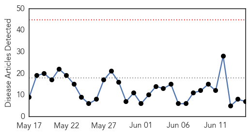

30 Day Trends
Web: 0 alerts, 0 warnings
Twitter: 2 alerts, 0 warnings
Top Articles:
- 0.917
- Studies & Opinions. America’s renowned Centers for Disease Control is a key Kazakhstan partner in fight against epidemic. Tengrinews.kz
- 0.871
- As HIV Proliferates, Will the Public Good Be Placed Before Politics?
- 0.751
- June 15, 2015 Archives
- 0.751
- June 14, 2015 Archives
- 0.629
- Expert Says Bird Flu Outbreak Destined to Happen
- 0.576
- DA widens ban on US poultry imports
- 0.538
- Officials still alert as bird flu threat appears to wane
Top Tweets:
- 0.707
- RT: Flu season in the southern hemisphere Temporada de influenza via https://t.co/WCr1BJ7Bnc
Web/News Articles
Tweets